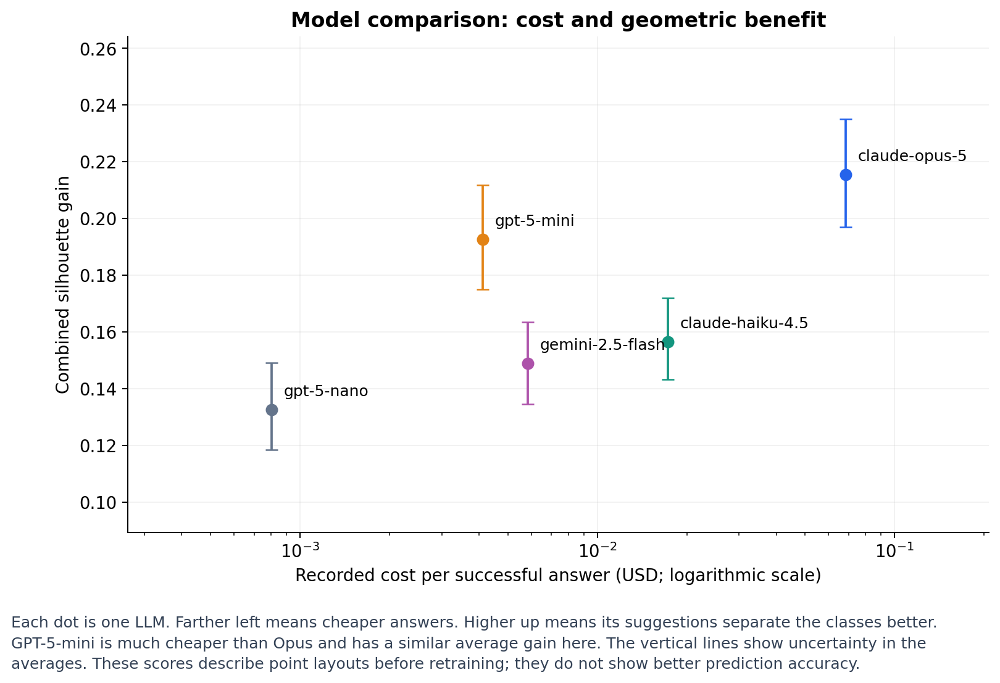
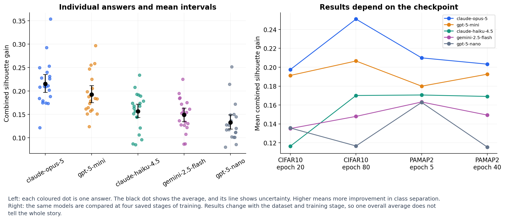
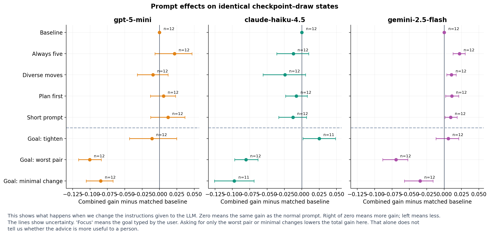
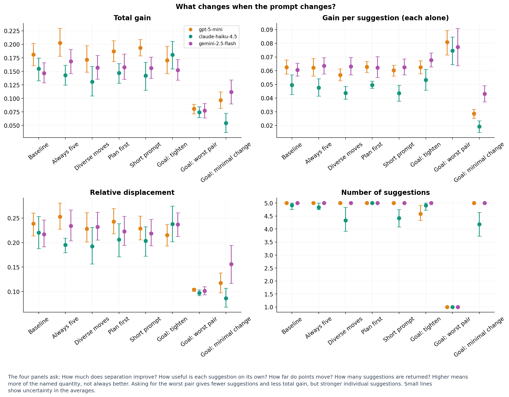
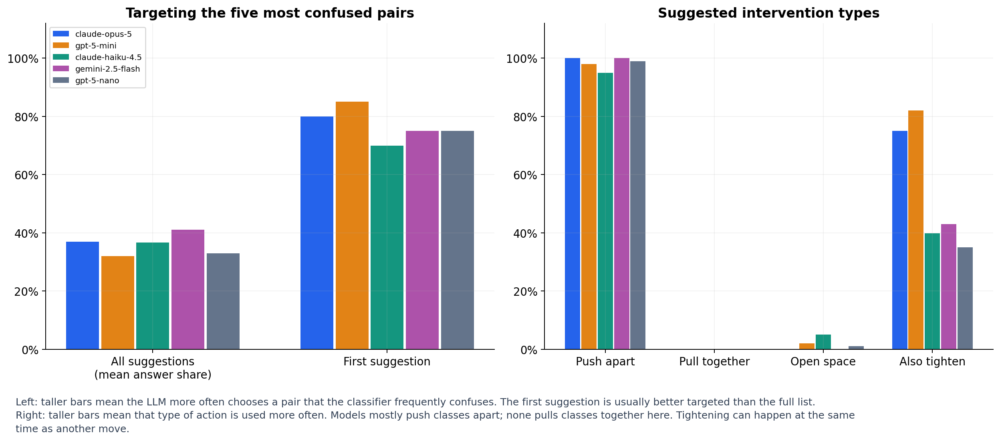
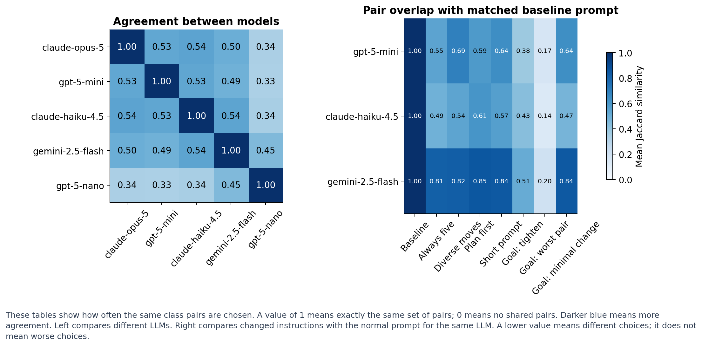
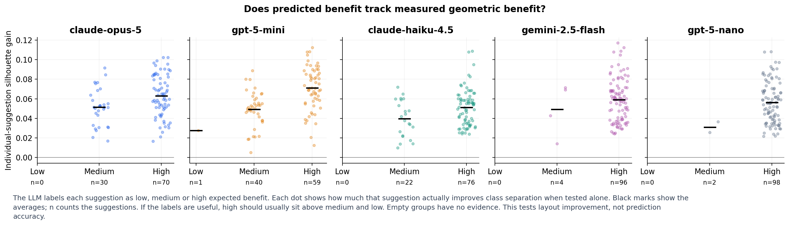
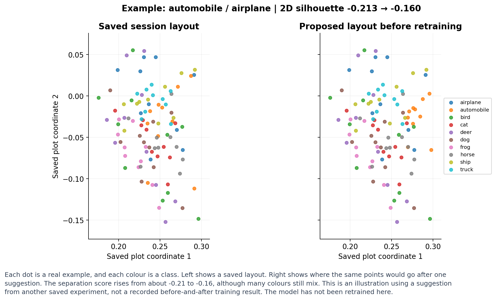

Based on 100 model-comparison calls and 288 prompt-study calls. Generated offline from saved data.
Intervals describe repeated draws at four fixed checkpoints; they do not establish generalisation to other datasets or training runs. Two failed prompt-study answers are excluded where needed. No strategy-training result file was found: the plot of suggestion gain versus held-out accuracy improvement cannot yet be calculated. Session logs are not a substitute for matched strategy experiments.

Each dot is one LLM. Farther left means cheaper answers. Higher up means its suggestions separate the classes better. GPT-5-mini is much cheaper than Opus and has a similar average gain here. The vertical lines show uncertainty in the averages. These scores describe point layouts before retraining; they do not show better prediction accuracy.
Means and 95% stratified bootstrap intervals over repeated draws within the four fixed checkpoints. Gain applies the complete answer jointly. Costs are recorded experiment costs, not current price quotes; failed answers excluded.

Left: each coloured dot is one answer. The black dot shows the average, and its line shows uncertainty. Higher means more improvement in class separation. Right: the same models are compared at four saved stages of training. Results change with the dataset and training stage, so one overall average does not tell the whole story.
Each dot is one successful answer. Intervals resample draws within fixed checkpoints. The right panel separates the two datasets and two training stages each.

This shows what happens when we change the instructions given to the LLM. Zero means the same gain as the normal prompt. Right of zero means more gain; left means less. The lines show uncertainty. 'Focus' means the goal typed by the user. Asking for only the worst pair or minimal changes lowers the total gain here. That alone does not tell us whether the advice is more useful to a person.
Differences are paired by checkpoint and draw within the prompt study, with 95% stratified bootstrap intervals. Failed or missing pairs excluded; n is shown. Dashed line separates wording variants from operator goals. Intervals do not cover uncertainty about new checkpoints.

The four panels ask: How much does separation improve? How useful is each suggestion on its own? How far do points move? How many suggestions are returned? Higher means more of the named quantity, not always better. Asking for the worst pair gives fewer suggestions and less total gain, but stronger individual suggestions. Small lines show uncertainty in the averages.
Mean and 95% stratified bootstrap intervals. Per-suggestion gain evaluates each suggestion independently; it is not total gain divided by suggestion count. Displacement is the recorded shift_ratio.

Left: taller bars mean the LLM more often chooses a pair that the classifier frequently confuses. The first suggestion is usually better targeted than the full list. Right: taller bars mean that type of action is used more often. Models mostly push classes apart; none pulls classes together here. Tightening can happen at the same time as another move.
Descriptive proportions from successful model-comparison answers. Tightening can accompany a movement, so the four intervention bars do not sum to 100%.

These tables show how often the same class pairs are chosen. A value of 1 means exactly the same set of pairs; 0 means no shared pairs. Darker blue means more agreement. Left compares different LLMs. Right compares changed instructions with the normal prompt for the same LLM. A lower value means different choices; it does not mean worse choices.
Pairs are unordered class-ID pairs, matched by checkpoint and draw. Failed answers excluded. Diagonal and baseline self-comparisons are 1 by construction. Lower values indicate different selected pairs, not necessarily worse suggestions.

The LLM labels each suggestion as low, medium or high expected benefit. Each dot shows how much that suggestion actually improves class separation when tested alone. Black marks show the averages; n counts the suggestions. If the labels are useful, high should usually sit above medium and low. Empty groups have no evidence. This tests layout improvement, not prediction accuracy.
Each dot is a suggestion, evaluated alone; black marks indicate means. Suggestions from the same answer share an input state and are not independent observations. Empty categories are labelled n=0; no calibration fit is inferred for them.

Each dot is a real example, and each colour is a class. Left shows a saved layout. Right shows where the same points would go after one suggestion. The separation score rises from about -0.21 to -0.16, although many colours still mix. This is an illustration using a suggestion from another saved experiment, not a recorded before-and-after training result. The model has not been retrained here.
Illustration, not a replay of the comparison experiment: the first suggestion from a median-gain GPT-5-mini CIFAR10 answer is applied to a separate real saved session snapshot (round 002). Identical points, colours and axis limits; metrics here are recomputed in 2D. No training occurs. The original experiment measured higher-dimensional geometry.